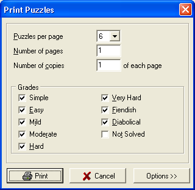
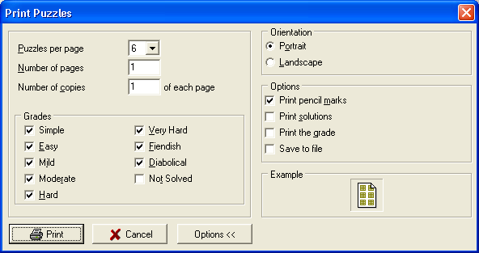

This dialog allows you to print multiple puzzles from the library. You can select the number of puzzles per page, the number of pages, the grades of the puzzles, and also access some common print options after expanding the dialog using the "Options >>" button.
Note: Selecting, for example, four puzzles with four grades enabled, won't necessarily give one puzzle for each grade. It will give four puzzles randomly selected from the four selected grades. They could all be the same grade, or they could all be different, or they could be somewhere in between.

the "Print Many" dialog

the expanded "Print Many" dialog showing additional options.
Note: If the Save to File option is checked, each printed puzzle will also be saved to the default folder with a file name based on the current date and time.